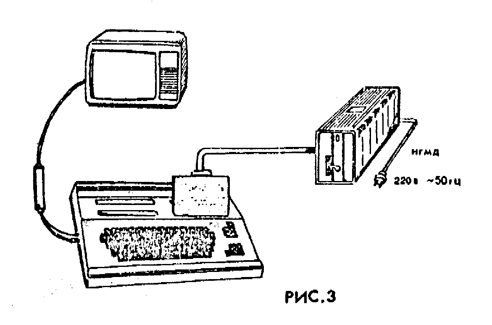

Сохранено с сайта http://arendatr.chat.ru
МОДУЛЬ КОНТРОЛЛЕРА ДИСКОВОДА
"ПАРТНЕР 01.51"
Руководство по эксплуатации
1П3.039.003РЭ
1. Общие указания
ВНИМАНИЕ! Модуль контроллера дисковода "Партнер 01.51" работает только с модулем вычислительным центральным "Партнер 01.01" (МВЦ), который при включении выводит на экран телевизора сообщение:
ПАРТНЕР-01.01 (В.03)
:->
Для доработки МВЦ с операционной системой "МОНИТОР" версии 02 и младше до версии 03 следует обратиться в ремонтные организации, приведенные на вкладыше к данному документу.
1.1. Модуль контроллера дисковода (в дальнейшем МКД) "Партнер 01.51" предназначен для сопряжения модуля вычислительного центрального (в дальнейшем МВЦ) "Партнер 01.01" ТУ25-7224.0005-88 (с операционной системой "Монитор" версия 0.3 и выше) с накопителем на гибком магнитном диске СМ 5640 или СМ 5643 (в дальнейшем НГМД). Питание НГМД осуществляется от внешнего источника питания. НГМД и источник питания в комплект поставки не входят.
Внимание! МКД гарантированно работает только с НГМД, режимы работы и технические характеристики которого соответствуют эксплуатационной документации.
1.2. Перед подключением МКД следует внимательно ознакомиться с настоящим руководством по эксплуатации, а также с руководством по эксплуатации на МВЦ "Партнер 01.01" 1П2.940.000РЭ. Грамотное обращение с МКД позволит Вам полностью использовать возможности МКД и обеспечит длительную и эффективную его работу.
1.3. При покупке МКД следует требовать проверки:
комплекта поставки в соответствии с разделом 2;
наличия в гарантийном и отрывном талонах руководства по эксплуатации даты продажи и штампа магазина;
сохранности пломб;
соответствия номера МКД в гарантийном талоне номеру на этикетке кожуха.
При утере гарантийного талона и нарушении пломб Вы лишаетесь права на гарантийный ремонт.
1.4. После хранения изделия в холодном помещении или его перевозки в зимних условиях, необходимо перед включением в электрическую сеть дать ему прогреться при комнатной температуре в течение 3-4 часов.
2. Комплектность поставки
В комплект поставки входят:
модуль контроллера дисковода "Партнер 01.51" - 1 шт.;
розетка СНО 63-64/95х9Р-24-2
руководство по эксплуатации 1П3.039.003РЭ.
схема электрическая принципиальная и схема расположения элементов - 1 компл.
диск гибкий магнитный ГМД 1302х80 - 5 шт.
3. Основные технические характеристики
3.1. Элементная база - микросхемы серий КР1818, К555, К573.
3.2. МКД обеспечивает запись и чтение данных на (с) ГМД в формате МФМ.
3.3. ГМД работает только в комплекте с НГМД.
3.4. Максимальный объем информации на отформатированном ГМД - 360 Кб. Режим работы - односторонний.
3.5. Питание МКД осуществляется от МВЦ через системный разъем Х2. Ток потребления по каналу +5В не более 0,6 А, по каналу +12В - не более 80 мА.
3.6. Габаритные размеры МКД не более 148х156х33 мм.
3.7. Масса не более 0,5 кг.
4. Указание мер безопасности
4.1. При работе с МКД необходимо учитывать все требования к безопасности, указанные в руководстве по эксплуатации на МВЦ "Партнер 01.01" (1П2.940.000РЭ) и в паспорте на НГМД.
4.2. ВНИМАНИЕ! Во избежание поражения электрическим током запрещается эксплуатировать МКД со снятым кожухом.
Все подключения (отключения) МКД к (от) МВЦ, а также подключение (отключение) кабеля связи к (от) МКД и НГМД должны производиться ТОЛЬКО НА ОБЕСТОЧЕННЫХ МВЦ и НГМД.4.3. Во избежание перегрева МКД запрещается закрывать вентиляционное отверстие.
4.2. При распайке кабеля связи необходимо надежно заизолировать все открытые токоведущие части кабеля.
5. Подготовка к работе
5.1. Для подключения МКД к НГМД произвести распайку кабеля связи проводом типа НВМ-0,12 согласно рис.1 и рис.2. Провода вести витой парой.
| Х1 | Х2 | ||
| Цепь | № конт. | № конт. | Цепь |
| 0V | B2 | 7 | 0V |
| ИНД | A2 | 8 | IX |
| 0V | B3 | 9 | 0V |
| SEL0 | A3 | 10 | SE0 |
| 0V | B14 | 11 | 0V |
| SEL1 | A14 | 12 | SE1 |
| 0V | B5 | 15 | 0V |
| MOT0 | A5 | 16 | MO |
| 0V | B7 | 17 | 0V |
| НАПР | A7 | 18 | SD |
| 0V | B6 | 19 | 0V |
| ШАГ | A6 | 20 | ST |
| 0V | B8 | 21 | 0V |
| ДЗП | A8 | 22 | WD |
| 0V | B9 | 23 | 0V |
| ЗПС | A9 | 24 | WE |
| 0V | B10 | 25 | 0V |
| D00 | A10 | 26 | T0 |
| 0V | B11 | 27 | 0V |
| ЗЗП | A11 | 28 | WP |
| 0V | B12 | 29 | 0V |
| ДЧТ | A12 | 30 | RD |
| 0V | B4 | 31 | 0V |
| SIDE | A4 | 32 | SS |
| 0V | B13 | 33 | 0V |
| RDY | A13 | 34 | RDY |
| Х1 | Х2 | ||
| Цепь | № конт. | № конт. | Цепь |
| ИНД | A2 | 3A | IX |
| SEL0 | A3 | 4A | SE0 |
| Общ | B6 | 6A | 0V |
| ШАГ | A6 | 7A | ST |
| ДЗП | A8 | 8A | WD |
| ЗПС | A9 | 9A | WE |
| Общ | B10 | 10A | 0V |
| Общ | B11 | 11A | 0V |
| Общ | B12 | 12A | 0V |
| RDY | A13 | 13A | RDY |
| Общ | B2 | 2B | 0V |
| Общ | B3 | 3B | 0V |
| Общ | B4 | 4B | 0V |
| SEL1 | A14 | 5B | SE1 |
| MOT0 | A5 | 6B | MO |
| НАПР | A7 | 7B | SD |
| Общ | B8 | 8B | 0V |
| Общ | B9 | 9B | 0V |
| D00 | A10 | 10B | T0 |
| ЗЗП | A11 | 11B | WP |
| ДЧТ | A12 | 12B | RD |
5.3. Подключить кабель связи к МКД и к НГМД в соответствии с рис. 3.
5.4. После проведения всех необходимых подключений включить питание телевизора и после появления растра на экране телевизора включить МВЦ, нажав клавишу ВКЛ. Нажать клавишу С ("Сброс") на клавиатуре МВЦ. В левом верхнем углу на экране телевизора должна высветиться следующая надпись с мерцающим изображением курсора:
ПАРТНЕР-01.01 (В.03)
:->
5.5. Включить питание НГМД. Порядок дальнейшей работы определяется последующими действиями потребителя, которые производится в соответствии с руководством оператора на МВЦ "Партнер 01.01" 1П3.00045-01 34 01, а также с разделом 6 настоящего руководства.
6. Руководство оператора
6.1. Настоящий раздел регламентирует работу оператора при работе с МКД. МКД обеспечивает возможность записи и чтения на (с) ГМД информации (файлов) с расширением ASP, BSP, BIP. Указанные расширения введены с целью получения возможности хранения на дискете программ, написанных на языке БЕЙСИК, АССЕМБЛЕР, а также текстов, набранных на редакторе "Партнера", и бинарных данных и программ.
6.2. Расширение BSP идентифицирует файлы, содержащие БЕЙСИК-программы.
Расширение ASP идентифицирует файлы на языке АССЕМБЛЕР или тексты, набранные на редакторе.
Расширение BIP идентифицирует файлы, содержащие какие-либо двоичные коды или оттранслированные программы.
6.3. Вставить в НГМД дискету 1П3.060.015, содержащую ОС CP/M-80, и нажать клавиши Е "2" ВК. После нажатия указанных клавиш в ОЗУ МВЦ "Партнер 01.01" загружается с ГМД версия CP/M, использующая 28 Кбайт памяти, о чем гласит сообщение на экране. Загрузка CP/M заканчивается выходом на стимул A>, что означает готовность к работе.
Для изучения настоящей версии CP/M можно пользоваться любой технической литературой, описывающей данную ОС.
6.10. Кроме вышеперечисленных транзитных приказов CP/M пользователь имеет возможность работать с резидентными (встроенными) приказами CP/M. Резидентные приказы позволяют вызвать небольшие програмы, постоянно находящиеся в памяти вместе с системой. К таким приказам относятся REN, ERA, TYPE.
6.10.1. С помощью приказа REN можно переименовывать файлы. После стимула A> введите с клавиатуры приказ REN с двумя параметрами: старое имя файла и новое имя файла, разделенные знаком "=", и нажмите клавишу ВК, например:
A>REN NEW.DOC=OLD.DOC
6.10.2. С помощью приказа ERA можно удалять файлы, записанные на дискете. Для приказа ERA в качестве параметра задается имя удаляемого файла, затем нажмите клавишу ВК.
A>ERA SOME.EXE
С помощью приказа XDIR можно убедиться в отсутствии данного файла на дискете.
6.10.3. С помощью приказа TYPE можно вывести содержимое файла в коде ASCII на экран. Необходимый параметр - имя файла, затем нажмите клавишу ВК. Приостанов вывода - по клавише ЛАТ.
A>TYPE PRINT.TXT